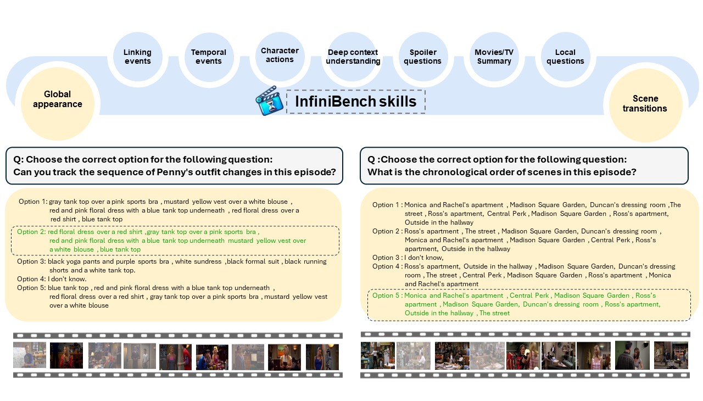

Abstract
Understanding long videos, ranging from tens of minutes to several hours, presents unique challenges in video comprehension. Despite the increasing importance of long-form video content, existing benchmarks primarily focus on shorter clips. To address this gap, we introduce InfiniBench a comprehensive benchmark for very long video understanding which presents 1)The longest video duration, averaging 52.59 minutes per video. 2) The largest number of question-answer pairs, 108.2K; 3) Diversity in questions that examine nine different skills and include both multiple-choice questions and open-ended questions; 4) Human-centric, as the video sources come from movies and daily TV shows, with specific human-level question designs such as Movie Spoiler Questions that require critical thinking and comprehensive understanding. Using InfiniBench, we comprehensively evaluate existing Large Multi-Modality Models (LMMs) on each skill, including the commercial models such as GPT-4o and Gemini 1.5 Flash and the open-source models. The evaluation shows significant challenges in our benchmark. Our findings reveal that even leading AI models like GPT-4o and Gemini 1.5 Flash face challenges in achieving high performance in long video understanding, with average accuracies of just 49.16\% and 42.72\%, and average scores of 3.22 and 2.71 out of 5, respectively. We hope this benchmark will stimulate the LMMs community towards long video and human-level understanding.
Benchmark skills
The set of skills introduced by InfiniBench includes a total of 9 skills. The figure includes two question examples for two distinct skills: the left example illustrates the Global Appearance skill, and the right example illustrates the Scene Transition skill.
Comparison between InfiniBench and existing video understanding benchmarks.

InfiniBench has the largest QA pairs, the most videos, and the longest average duration. (Note: Global Q stands for whether any challenging questions are designed to explain the whole video. VS is the video’s script, and VSum is the summary of the video.)
Benchmark statistics.
Left) Number of questions distribution for each skill set. Right) Number of videos for each skill.)

Data statistics. On the left, we report the number of videos and their length in hours from each data source: TVQA and MovieNet datasets. In the middle, we demonstrate the number of questions. On the right, we show the histogram of the lengths of the questions and answers.
Full annotation pipeline.

Full annotation pipeline for InfiniBench skill set. The upper section depicts the global appearance pipeline, while the lower section illustrates the question generation using GPT-4. The gates for video summary and video transcript indicate that some skills utilize only the summary, others use only the transcript, and some use both.)
Results
The overall performance of different models on InfiniBench is shown in Table (j) below. Three findings can be observed: (1) All models' is relatively lower than other benchmarks (e.g., Movie-chat and MLVU benchmarks). This could be interpreted by the challenging nature of our skills that require deep, long-term understanding. To further verify this point, we test our benchmark on the most recent short-video models, e.g., MiniGPT4-video and LLaVA-NeXT-Interleave. We argue that short-video models should suffer if the benchmark truly assesses long-video understanding capabilities. In other words, the limited context captured by the short video models should not be enough to answer long reasoning queries. As shown in the table below, MiniGPT4-video and LLaVA-NeXT-Interleave match lower than the random performance, which shows the effectiveness of our benchmark in assessing long reasoning capabilities. (2) GPT-4o achieves the best performance on both multiple-choice and open-ended questions, with 49.16 accuracy (0-100) and 3.22 GPT4-score (0-5). There is also a large performance gap between GPT-4o and other open-source models which could be justified by the huge gap in the scale of the training data and GPUs used in training these models.(3) For open-source models, Goldfish achieves the best result. with 22.57 accuracy and 1.77 GPT-4o score. One reason may be that eliminating the noisy information and focus on only the related information helps more in answering the questions. (4) short video models achieved the lowest performance because of information loss while sampling the long video into 8 or 45 frames in LLaVA-NeXT-Interleave and MiniGPT4-video respectively. (5) Models that can't input the subtitles such as Moviechat and LWM achieved low performance as the questions in our benchmark depends on both visual and textual information such as the questions that relies on the specific character actions or outfit and so on, these skills need the audio or the subtitles to be answered correctly. Performance on specific skills. Tables (a)-(i) shows the performance of SOTA long video understanding models on each skill. The performance varies significantly among different skills, highlighting the unique challenges introduced by each one. Observations of the results: (1) scene transition is the most difficult MCQ question type, with Gemini achieving only 29.48\% accuracy. The potential reason for the low performance is that this question requires global reasoning across the entire hour-long video instead of one clip we can also see that Goldfish is the lowest long video model in this skill (2) all models struggle with Movie Spoiler questions in open-ended questions with score 2.64 out of 5. The difficulty lies in the need for deeper understanding and reasoning to get the correct answer. Since Movie Spoiler questions are meaningful for human-centric video understanding, current model capabilities need improvement. (3) All open-source models' results on MCQ are below random choice, except for the Local visual+context questions. This shows that the main challenge for existing models is long-sequence global reasoning. (4) For the local questions our results is consistence with Gemini technical report that shows that Gemini and GPT-4o excel in the "needle in the haystack" skill, achieving high scores across all modalities. This aligns with our benchmark results in the local vision context skill, where Gemini and GPT-4o achieve the highest scores among all skills. Performance on Four Types of Questions. As introduced in Section skills in the main paper, in the InfiniBench questions for each skill can be identified as one of four high-level types: Global visual, Global contextual, Global vision + text, and Local vision + context. The results for each type of question are provided in the Table below.Among the commercial models, GPT-4o performs best across all four question types, despite being limited to processing only 250 frames, whereas Gemini can access the entire video. One possible reason for GPT-4o's superior performance could be its additional knowledge of these movies and TV shows, which enhances its ability to answer the questions accurately For the open-source models, the table indicates that LLaMA-vid excels in Global Vision questions, while Goldfish outperforms in the remaining three question types. This suggests that skills like Global Appearance and Scene Transitions require information from the entire video, rather than just the top-k segments as used by Goldfish. In contrast, for local questions, there's a significant gap between LLaMA-vid and Goldfish, with Goldfish benefiting from filtering out noisy information by focusing only on the top-k clips.The main reason for the poor performance of LWM and MovieChat is that these two models make predictions from video only, missing important text information. This highlights the importance of long video understanding models handling both modalities. Additionally, global contextual questions are challenging for all models, requiring complex reasoning. :